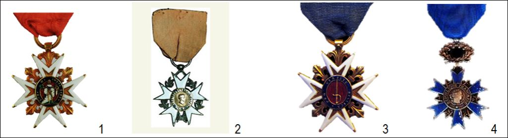
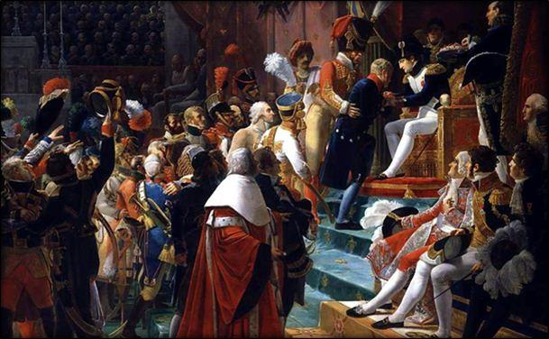
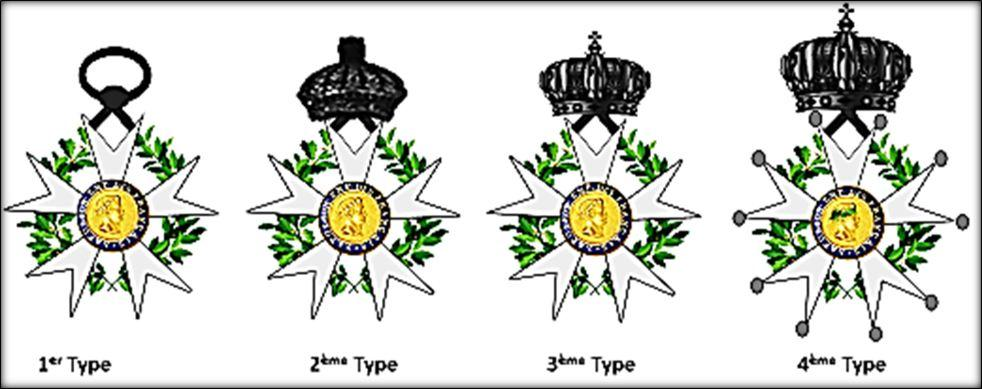
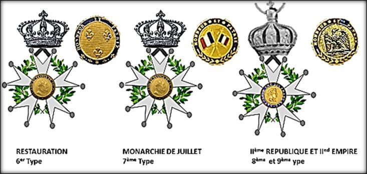
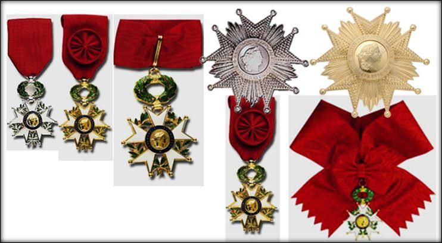
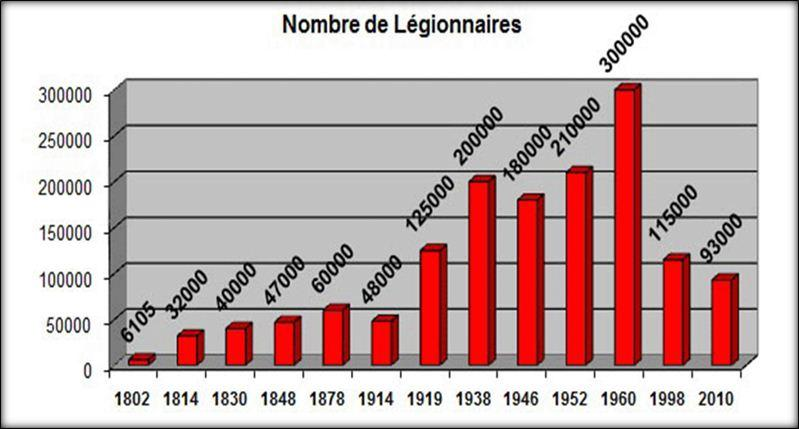
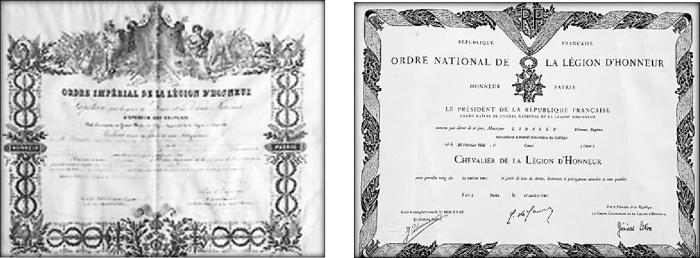

L’étoile de la Légion d’honneur, souvent à tort appelée « croix », est assurément l’une des décorations les plus connue dans le monde, au même titre que peut l’être l’étoile de Héros de l’Union Soviétique créée en 1934. Beaucoup de français, pensent que cette « médaille » de la Légion d’honneur a toujours existé, ignorant même les ordres d’ancien régime qui existaient en France avant la révolution de 1789.
Un ordre impérial inspiré de l’ordre royal et militaire de Saint Louis
Pourtant, l’ordre national de la Légion d’honneur - s’il s’inspire bien des ordres de l’ancienne monarchie française et notamment de l’ordre du Saint Esprit (un peu) et de Saint-Louis (beaucoup) - révolutionne dans sa conception même l’idée d’honneur qui n’est plus héréditaire mais, dorénavant, basée sur les seules qualités personnelles du récipiendaire. La Légion d’honneur recomposera dorénavant les mérites individuels « éminents », alors que l’ordre national du Mérite, deuxième ordre national français créé par le général de Gaulle en 1963, ne récompensera (que) les mérites « distingués ».
La Légion d’honneur, premier ordre d’honneur français assure en réalité un lien phaleristique entre les ordres de chevalerie d’ancien régime et les armes d’honneurs révolutionnaires, jusqu’à devenir un symbole fort de la république française. A travers notre réflexion, nous allons essayer de comprendre pourquoi cet ordre impérial, haï par les révolutionnaires jacobins tout comme par les royalistes légitimistes, a réussi à traverser les 200 ans de régimes politiques de notre pays et continue à être, encore de nos jours, l’attention de tous les français lors de chaque promotion du 14 Juillet !
Pourquoi une Légion d’honneur ?
En abolissant en 1791 tous les ordres d’anciens régimes (Ordres du Saint-Esprit, de Saint-Michel, de Notre-Dame du Mont-Carmel, de Saint-Lazare de Jérusalem, de Saint Louis etc…) la révolution française avait créé un véritable état de manque, bien que sous l’ancien régime les français étaient peu décorés.
Paradoxalement c’est la république, sans doute en recherche de signe de légitimité, et le général Bonaparte, alors premier consul de la république, qui par opportunisme politique imagina de créer une distinction civile et militaire pour récompenser la bravoure et le talent. En fin stratège politique, le futur napoléon premier avait compris l’intérêt de créer une marque de reconnaissance officielle pour s’attirer les bonnes grâces d’une nouvelle élite sociale postrévolutionnaire dont il résuma l’idée, devant le Conseil d’état lors de l’examen du projet de loi le 14 floréal, An X de la république (soit le 4 mai 1802) :
« C'est avec des hochets que l'on mène les hommes. Je ne dirais pas cela à une tribune, mais devant un conseil de sages et d'hommes d'Etat, on doit tout dire. (Les Français) n'ont qu'un sentiment : L‘honneur ; il faut donc donner de l'aliment à ce sentiment-là, il leur faut des distinctions ».
Une filiation avec un ordre royal !
Le futur empereur Napoléon Ier avait bien compris que les hommes sont attachés aux honneurs. Mais son trait de génie fut de créer un ordre nouveau tout en s’inspirant d’un ordre ancien de la monarchie. En effet, le ruban rouge de l’ordre de la Légion d’honneur est directement inspiré de l’ordre royal et militaire de Saint-Louis créé par Louis XIV en 1693. Cet ordre militaire royal était attribué à des sujets de confession catholique, qu’ils fussent nobles ou non. Cela représentait une véritable innovation puisque la plupart des ordres royaux (Saint-Esprit, Saint Michel, ND du Mont Carmel etc…) étaient alors réservés à la seule noblesse. Dans le même ordre d’idée, le roi Louis XV, son fils, créera en 1759 l’Institution du Mérite militaire qui était carrément destiné aux officiers protestants, dans un pays où le catholicisme était religion d’état.
C’est d’ailleurs dans le même esprit que celui de Bonaparte, que le général de Gaulle alors président de la république française, s’inspirera du ruban bleu du Mérite militaire de Louis XV pour instaurer l’ordre national du Mérite créé en 1963 en remplacement des ordres ministériels antérieurs pléthoriques. En conséquence on peut dire que les deux ordres nationaux français, impériaux pour la Légion d’honneur et Républicain pour l’Ordre du Mérite sont tous les deux directement inspirés d’ordres d’ancien régime. Une fois de plus la phaleritsique se place au cœur de l’histoire d’une nation.

1 - Ordre Royal et Militaire de Saint-Louis (1693), 2 - Ordre National de la Légion d’honneur (1802), 3 – Institution du Mérite militaire (1759), 4- Ordre National du Mérite (1963)
Une distinction qui traverse tous les régimes politiques français
L’idée novatrice de Louis XIV d’attribuer une distinction à des officiers courageux, sans exiger d’eux une quelconque noblesse, dû naturellement plaire à Napoléon, qui désireux d’assoir son nouveau régime politique entendait ainsi créer sa propre « noblesse de mérite» par l’attribution d’une marque de distinction visible aux yeux de tous. De vieux jacobins ne s’y trompèrent d’ailleurs pas, comme ce membre du Conseil d'État qui interpella le futur empereur sur le bien-fondé d'une décoration qui « violait ainsi les principes révolutionnaires d'égalité ». Mais le 1er Consul poursuivait son idée et c’est dès le 19 mai 1802 que le projet de loi était voté à 14 contre 10 voix au Conseil d’Etat et que Napoléon Bonaparte - sous lequel pointait déjà l’Empereur Napoléon Ier - décidait de rompre avec les idéaux révolutionnaires en instaurant sa propre « Legio honoratorum » directement inspirée des romains. Il faudra cependant attendre l’instauration de l’Empire pour que les premières insignes soient distribuées par le jeune Napoléon Ier comme l’illustra superbement le tableau de Devret exposé de nos jours au Château de Versailles.

Première distribution des décorations de la Légion d’honneur, le 14 juillet 1804 aux Invalides (Tableau de Jean-Baptiste Devret (1768-1848) exposé au Château de Versailles (Extrait)
Si la Légion d’honneur va traverser plus de 200 ans d’histoire, chaque régime politique va cependant tenir à marquer de sa « patte phaléristique » les insignes afin de les rallier à son système politique. C’est ce que nous allons maintenant étudier.
Sous le Directoire (1802-1804)
Le 1er type de la Légion d’honneur voit donc le jour en 1802. Le modèle original de l’insigne consistait alors en une simple étoile d’émail blanc à 5 rayons (ou branches) d’émail blanc suspendu à un ruban de couleur sang et portant en son centre la tête du premier consul coiffé à l’antique. Le revers portait une aigle (toujours féminin en héraldique) symbole de l’Empire et l’exergue « Honneur et Patrie » devenait la devise de l’ordre.
Sous l’Empire (1804-1815)
La « croix » va évoluer progressivement sous le premier empire jusqu’à prendre sa forme quasi-définitive. Le 2ème type ajoute une couronne car Napoléon a été couronné Empereur des français. L’exergue autour du buste de Napoléon « en césar romain » comporte d’ailleurs le texte : « Napoléon Ier, Empereur des Français » en rappelant ainsi qui en est l’instigateur. Le 3ème type de l’insigne qui apparait à peu près vers 1808 modifie légèrement la forme de couronne en une forme plus impériale. Enfin, le 4ème type de l’insigne vers 1810 introduit une grande couronne impériale, ajoute des feuilles de laurier et de chêne plus fournies et émaillées de vert et entre les pointes de l’étoile et positionne des pommettes au bout de chaque pointes de l’étoile à 5 branches. La tête du centre de l’avers de la médaille est modifiée avec un profil de d’empereur à l’impérial romain et se trouve coiffé d’une couronne de lauriers. Rappelons également que depuis le 1er mai 1808 l’Empereur Napoléon Ier a créé une noblesse d’Empire auquel les titulaires de la Légion d’honneur peuvent légitimement accéder sous certaines conditions. L’ordre de la Légion d’honneur constituera alors à cet époque un signe impérial du pouvoir et témoignera de l’apparition d’une caste d’élite républicaine. Cette nouvelle noblesse de l’ordre lui donnera une dimension nationale que celle-ci conservera sous tous les régimes même si elle n’anoblit plus de nos jours.

Les 4 premiers types de la Légion d’honneur sous le Directoire et l’Empire
Sous la Restauration (1815-1830)
Le 6ème type de la Légion d’honneur est instauré par Louis XVIII, lorsque les Bourbons remontent sur le trône de France. Tout en restaurant les anciens ordres de la Monarchie, le roi décide de conserver la Légion d’honneur (mais sans lui conserver son rang de premier ordre). La tête de l’empereur est naturellement remplacée par celle d’Henri IV avec l’exergue « Henri IV, roi de France et de Navarre » et l’aigle du revers de la médaille est remplacé par 3 fleurs de lys. L’exergue de l’ordre, situé au revers conserve sa devise « Honneur et Patrie ».
Sous la monarchie de Juillet (1830-1848)
Après les 3 glorieuses et le renversement des Bourbons, c’est la branche cadette des capétiens, Les Orléans, qui montent à leur tour sur le trône de France. Toutefois le roi Louis-Philippe, à l’inverse de ses cousins Louis XVIII et Charles X n’est pas roi de France mais « roi des Français ». Le 7ème type de l’insigne de la Légion d’honneur tente donc de rallier cette double origine politique royale et constitutionnelle en conservant sur son avers la tête du roi Henri IV mais avec le simple exergue « Henri IV » et sur le revers de la médaille de deux drapeaux tricolores croisés à la place des fleurs de lys (ou anciennement de l’aigle impérial). Ces drapeaux français entrecroisés resteront d’ailleurs sur toutes les futures versions de l’ordre national, excepté sous le IInd Empire.
Sous la IInde République (1848-1852) et le IInd Empire (1852-1870)
Sous la 2nde république le prince Louis-Napoléon Bonaparte futur Empereur Napoléon III, restaurera naturellement la décoration de son oncle Napoléon Ier en lui redonnant tout son lustre. Le buste de profil d’Henri IV est remplacé par celui de Napoléon Ier avec l’exergue « Napoléon Ier, empereur des Français » et les drapeaux français sont remplacés par une aigle impérial comme sous le premier Empire. Ces deux modèles impériaux ne se différencient guères les uns des autres et entraineront de nombreuses erreurs de collectionneurs !

Les 3 types de l’ordre au XIX° siècle
Sous les républiques
Par la suite la Légion d’honneur (10ème type) va prendre sa forme définitive que cela soit sous la IIIème République (1870-1940), sous la 4ème République (1946-1958) et sous la Vème République (depuis 1958). Pour l’anecdote le maréchal Pétain qui instaura une nouvelle distinction du régime de Vichy : la Francisque sous l’Etat Français de 1940 à 1944, conservera également la Légion d’honneur mais au second rang. De nos jours la Légion d’honneur est redevenu le premier ordre national français et conserve une forme définitive avec au centre le buste de Marianne (symbole de la république) et l’exergue « république Française » et à l’avers les drapeaux tricolores et l’exergue « Honneur et Patrie ». Les couronnes impériales ou royales ont été remplacées par une couronne de lauriers (symbole de la gloire) et de chênes (symbole de la sagesse).
L’ordre national de la Légion d’honneur comporte 3 classes : Chevalier, Officier et Commandeur et 2 Dignités : Grand-Officier et Grand-Croix (on disait Grand Aigle sous l’Empire). Les rubans se portent seul pour le premier grade, avec une rosette rouge pour le 2ème, en cravate autour du cou pour la troisième et les deux rangs supérieurs sont représentés par une plaque de l’ordre en métal argenté pour la dignité de grand-officier (avec la croix d’officier) et dorée pour celle de grand-croix avec le grand-cordon sur l’épaule droite, à la manière dont se portaient les ordres d’anciens régimes. Un cérémonial spécifique de remise de la « Croix » est codifié et la gestion administrative et disciplinaire de l’ordre est assurée par un code la Légion d’honneur et la grande chancellerie de la Légion d’honneur située dans le palais de Salm à Paris.

Les 3 grades et 2 dignités de l’ordre national de la Légion d‘honneur actuellement
Un symbole de pouvoir dont certains régimes ont abusés plus que d’autres
Si l’Empereur Napoléon Ier n’abusa que peu de la légion d‘honneur qu’il avait lui-même crée, ne distribuant que 6.000 croix pour une population française de 29 millions environ à l’époque soit 0,02 %, on constatera que sous la IIIème république (en 1878) on atteindra un pourcentage de 0,16 %, soit 8 fois plus que sous le premier Empire. Les pics de 1919 et de 1945 sont liés aux deux conflits mondiaux (14-18 et 39-45) et ceux de 1952 à 1960 aux conflits coloniaux (Indochine et Algérie). Depuis 2010 les promotions ont tendance à se limiter de nouveau pour atteindre 93.000 légionnaires sur une population française de 62,8 millions d’habitants en 2010, soit un total de 0,15 % presque qu’autant qu’à la fin du XIXème siècle. Mais avec une population qui a doublé.

De nos jours, l'ordre national de la Légion d'honneur a conservé son statut de plus haute décoration honorifique française. SI les français critiquent parfois cette institution républicaine, héritée de l’Empire au même titre que le code Civil, c’est parce que dans l’imaginaire populaire cette distinction doit être réservée en priorité à une «élite » au service de la France ce qui peut décontenancer lorsqu’elle est attribuée à une artiste ou un sportif… Il est vrai que la situation de paix dans laquelle vit notre pays depuis plus de 50 ans a permis de limiter les attributions à titre militaires pour fait de guerre et c’est tant mieux. De même la création de l’ordre National du Mérite constitue dorénavant une étape supplémentaire avant d’accéder à la « Croix de Chevalier ». Enfin, l’Ordre est aussi plus largement attribué aux femmes qui ne représentaient que 0,25 % des légionnaires en 1912 et représentent dorénavant environ 10 % des effectifs de l’ordre. Nous terminerons cet article en rappelant que comme tout ordre, la Légion d’honneur fait des mécontents et surtout pour ceux qui ne l’obtiennent pas après l’avoir réclamé. D’autres plus discrets (ou cyniques) comme l’écrivain François Mauriac (1885-1970) n’hésitaient pas à dire : « La Légion d’honneur, ça ne se demande pas, ça ne se refuse pas et ça ne se porte pas ». Mais il est vrai que lui-même était grand-croix de la Légion d’honneur !

Diplômes de l’Ordre Impérial de la Légion d’Honneur (IInd Empire) et diplôme actuel de l’ordre national de la Légion d’Honneur (Vème République)
Partager cette page